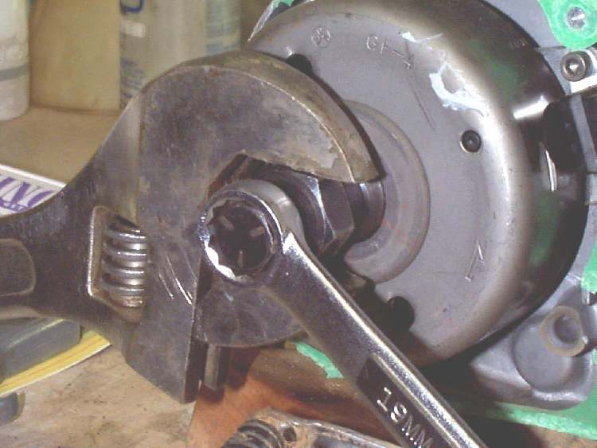

Photo: Dan's Motorcycle Repair Course (dansmc.com), used with permission.
The flywheel (also called the rotor) carries magnets and sits on a tapered end of the crankshaft. It must come off to reach the stator coils, pick-up or points under it. The taper grips hard. The correct puller threads into the flywheel and pushes on the crankshaft end. It lifts the flywheel without force on the casting.
Safety
- Do not hit the flywheel, lever it off, or use a general gear puller on its rim. Flywheels crack and the cost is high.
- The flywheel spins fast. A loose nut or a cracked rotor can fly apart. Tighten the nut to the manual's torque.
- Keep fingers clear of any pinch between the puller and the casting.
You need
- A puller made for your engine. The thread in the flywheel centre differs between models.
- A holding tool or strap to stop the flywheel turning while the nut is loosened and tightened.
- The torque value for the nut.
Steps
- Remove the flywheel cover. Disconnect the battery if there is one.
- Mark the position of the flywheel on the crankshaft with a paint pen if the manual says to. Keep the key.
- Hold the flywheel with the holding tool and undo the centre nut.
- Remove the washer. Check the nut and washer are not damaged.
- Screw the puller into the flywheel until it is fully engaged, then tighten the centre bolt of the puller against the crankshaft.
- Keep the puller bolt snug. If the flywheel does not release, tap the end of the puller bolt lightly with a hammer. The shock helps break the taper. Do not tap the flywheel.
- Lift the flywheel off. Keep the woodruff key. Wipe the taper and the flywheel bore. Check them for damage.
- Do your work on the coils or points.
- Refit: line up the key and the slot. Slide the flywheel on without force.
- Fit the washer and nut. Hold the flywheel with the tool and tighten to the manual's torque.
- Check the air gap between the pick-up and the flywheel if the manual gives one.
- Turn the engine by hand. It must turn freely with no rub.
Check your work
- No scraping noise when the engine turns.
- The nut is tight to the specified torque.
- Wiring is routed clear of the flywheel.